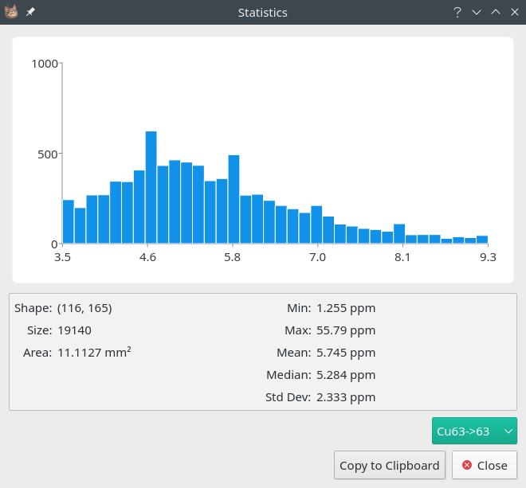

7. Statistics¶
Image Context Menu -> Statistics
Selection Context Menu -> Statistics
Basic statistical data is available in the Statistics dialog, accessible by right clicking an image. If a region is selected (see Region Selection) then the dialog will only process that region, otherwise the entire image is processed. To copy the statistics for all available elements click the Copy to Clipboard button.

The Statistics dialog. A histogram of the data is shown in the top part of the dialog and a few basic statistics in the bottom.¶
7.1. Example: Means in a region¶
- Using the selection tools, select the desired region.
See Region Selection for a details on the selection tools.
- Open the Statistics Dialog in selection.
Right clicking the selection will open its context menu.
- Export the statistics using Copy to Clipboard.
Statistics can now be pasted into a spreadsheet program.